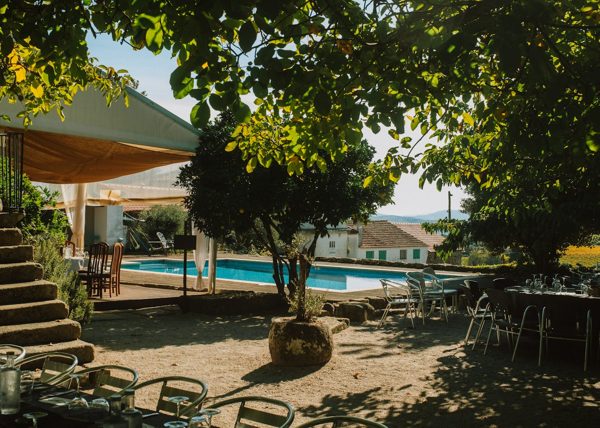
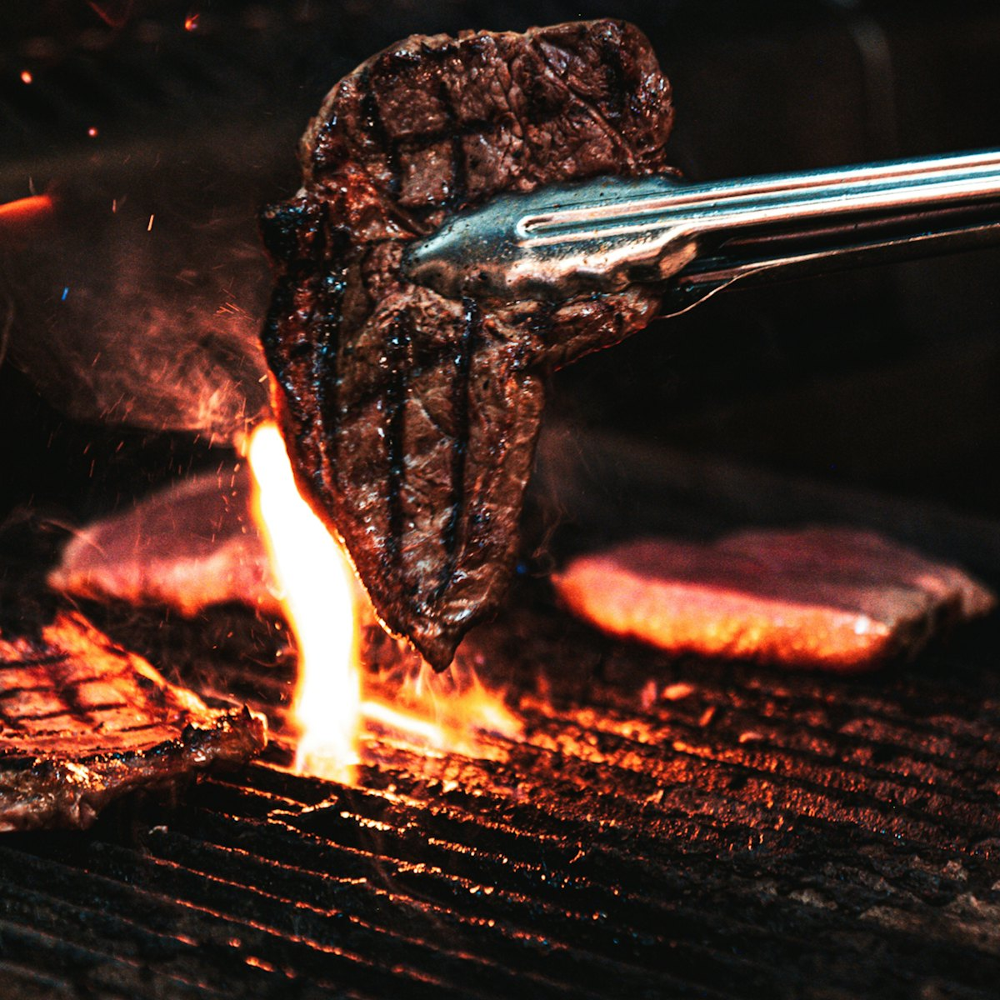
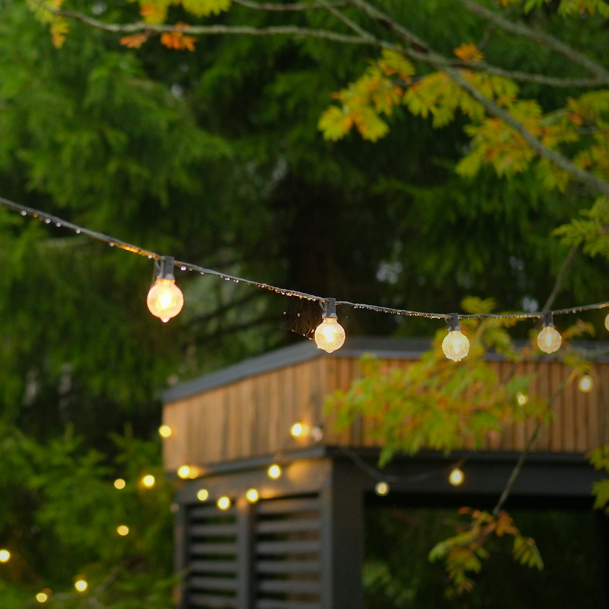

Pra que vai ser?
Escolha a ocasião e a data. A mensagem chega pronta no WhatsApp da Maria Helena.
O que tem na chácara
No bairro Engenho Velho, às margens da SP-342. Tudo o que a festa e o descanso pedem, num lugar só.
PiscinaCom espreguiçadeiras e gramado em volta. 
Quiosque com cozinhaFogão, geladeira e freezer para a festa. 
ChurrasqueiraPara o churrasco começar cedo. 
Forno a lenhaPizza e assados quando cai a noite. OfurôÁgua quentinha para relaxar no fim do dia. Espaço para eventosAniversários, casamentos e eventos em geral.
- 4quartos, cada um com banheiro
- 20pessoas hospedadas com conforto
- 1piscina e um ofurô
- Acessívelpara pessoas com deficiência
Fotos ilustrativas. No site final entram as fotos da própria Chácara Pé na Rocha.
Um sábado na chácara
Do café com o pé na grama até a última pizza do forno.
Primeiro mergulho, enquanto a turma vai chegando.
Churrasqueira acesa e mesa posta no quiosque.
Sombra das árvores, conversa sem pressa.
O céu fica laranja. Hora do ofurô.
Luzes acesas, parabéns e pizza do forno a lenha.
Fotos ilustrativas. Arraste para o lado para ver o dia inteiro.
Como reservar
Tudo pelo WhatsApp, direto com a Maria Helena.
- Mande a data e a ocasiãoAniversário, casamento ou fim de semana, e quantas pessoas vêm.
- Receba a respostaA chácara confirma se a data está livre e passa o valor e as regras de uso.
- Combine e garanta a dataAcertem horário de entrada e saída. Depois é só chegar e tirar o sapato.
Onde fica
- Endereço
- Rodovia SP-342, bairro Engenho Velho
Mogi Guaçu – SP - (19) 99383-4551
- Telefone
- (19) 3841-4874
- @chacarapenarocha
O ponto exato e as dicas de acesso a chácara envia pelo WhatsApp.
Perguntas frequentes
Quantas pessoas a chácara recebe?
Para dormir, são 4 quartos com banheiro, e a chácara hospeda 20 pessoas com conforto. Para festas com mais convidados, pergunte no WhatsApp.
Quanto custa o aluguel?
O valor muda conforme a data e a ocasião. Mande a data pelo WhatsApp e a chácara passa o orçamento.
Dá para fazer churrasco e cozinhar?
Sim. Tem churrasqueira, forno a lenha e um quiosque com cozinha, com fogão, geladeira e freezer.
A chácara é acessível?
Sim, tem acessibilidade para pessoas com deficiência.
Posso levar buffet, decoração e som?
Texto de exemplo. No site final entram as regras da chácara sobre fornecedores, som e horário.
Qual fim de semana vai ser o seu?
As datas de fim de semana são as primeiras a acabar. Pergunte agora se a sua está livre.
Consultar datas no WhatsApp